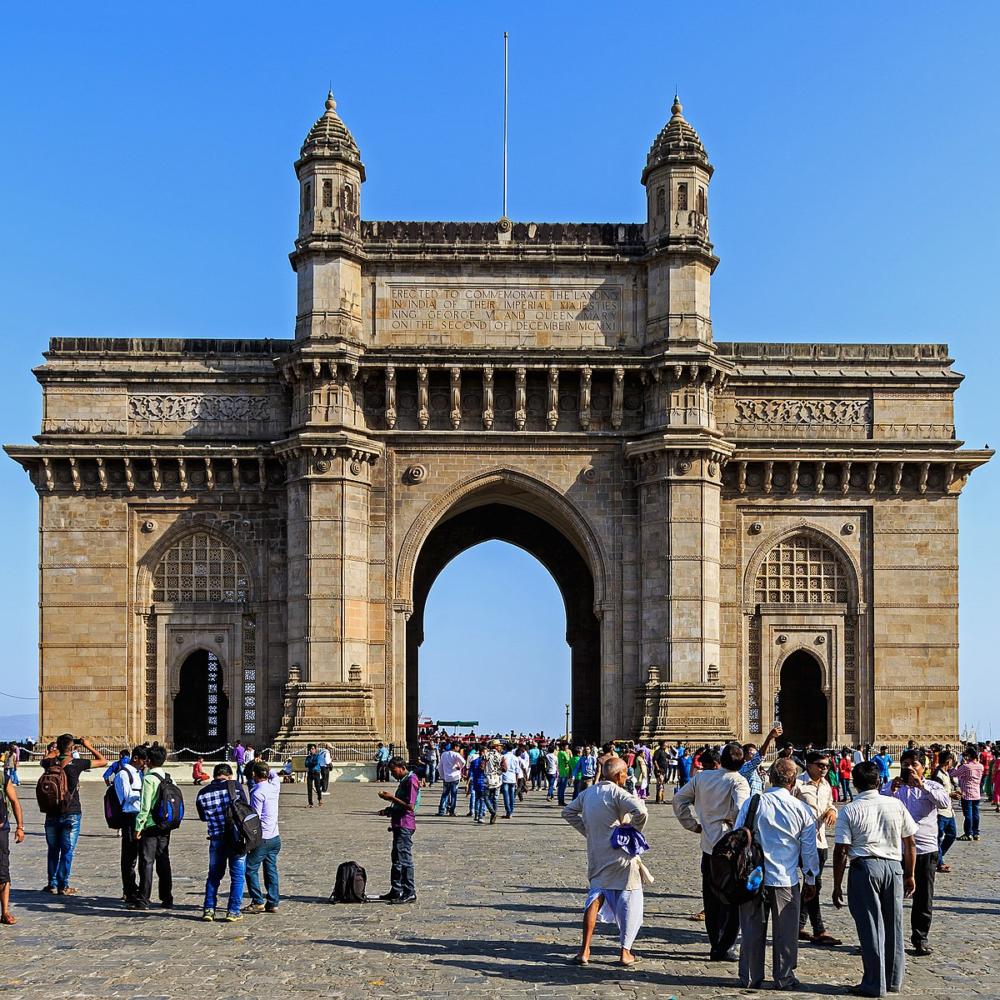

The Gateway of India is an arch-monument built in the early 20th century in the city of Mumbai, India. It was erected to commemorate the landing of King-Emperor George V, the first British monarch to visit India, in December 1911 at Ramchandani Road near Shyamaprasad Mukherjee Chowk. The foundation stone was laid in March 1913 for a monument built in the Indo-Saracenic style, incorporating elements of 16th-century Gujarati architecture. The final design of the monument by architect George Wittet was sanctioned only in 1914, and construction was completed in 1924. The structure is a memorial arch made of basalt, which is 26 metres (85 feet) high, with an architectural resemblance to a triumphial arch as well as Gujarati architecture of the time. After its construction the Gateway was used as a symbolic ceremonial entrance to India for important colonial personnel. The Gateway is also the monument from where the last British troops left India in 1948, following Indian independence. It is located on the waterfront at an angle, opposite the Taj Mahal Palace and Tower Hotel and overlooks the Arabian Sea. Today, the monument is synonymous with the city of Mumbai, and is amongst its prime tourist attractions. The gateway is also a gathering spot for locals, street vendors, and photographers soliciting services. It holds significance for the local Jewish community as it has been the spot for Hanukkah celebrations, with the lighting of the menorah, since 2003. There are five jetties located at the Gateway, of which two are used for commercial ferry operations.
The Gateway was the site of a terror attack in August 2003, when there was a bomb blast in a taxi parked in front of it. Access to the gateway was restricted after people congregated at its premises following the 2008 Mumbai terror attacks, in which the Taj Hotel opposite the gateway and other locations in its vicinity were targeted. In March 2019, the Maharashtra state government proposed a four-step plan to develop the location for the convenience of tourists, following a direction issued by the state governor in February 2019. The Gateway of India was built to commemorate the arrival of George V, Emperor of India and Mary of Teck, Empress consort, in India at Apollo Bunder, Mumbai (Bombay) on 2 December 1911 prior to the Delhi Durbar of 1911; it was the first visit of a British monarch to India.[1][2][3] However, they only got to see a cardboard model of the monument,[A] as construction did not begin until 1915.[1][5] The foundation stone for the Gateway was laid on 31 March 1913 by then Governor of Bombay, Sir George Sydenham Clarke with the final design of George Wittet for the Gateway sanctioned in August 1914.[6][5] Before the Gateway's construction, Apollo Bunder used to serve a native fishing ground.[7] Between 1915 and 1919 work continued at the Apollo Bunder to reclaim the land on which the Gateway was to be built, along with the construction of a sea wall.[6] Gammon India had undertaken construction work for the gateway.[8][B] Its foundations were completed in 1920 while construction was finished in 1924.[11][6] The Gateway was opened to the public on 4 December 1924 by then Viceroy, Rufus Isaacs, 1st Marquess of Reading.[12] Following Indian independence, the last British troops to leave India, the First Battalion of the Somerset Light Infantry, passed through the Gateway with a 21-gun salute, as part of a ceremony on 28 February 1948, signalling the end of the British Raj

The Gateway's arch has a height of 26 metres (85 feet) with its central dome being 15 metres (49 feet) in diameter.[30][8] The monument is built of yellow basalt and reinforced concrete.[31] The stones were sourced locally while the perforated screens were brought in from Gwalior.[32] The monument faces towards the Mumbai Harbour.[33] There are four turrets on the structure of the gateway, and there are steps constructed behind the arch of the Gateway which lead to the Arabian Sea.[34] The monument features intricate stone latticework (also known as the jali work).[30] The Scottish architect, George Wittet combined elements of the Roman triumphal arch and 16th-century architecture of Gujarat.[35][H] The architecture also combines indigenous architectural elements with elements of Islamic architecture, known as the Indo-Saracenic.[37] The harbour front was realigned in order to make an esplanade, which would sweep down to the centre of the town. On each side of the arch, there are large halls with the capacity to hold 600 people.[31] The cost of the construction was ₹21 lakh (US$28,000), borne by the then government.[8] Due to a paucity of funds, the approach road was never built. Hence, the Gateway stands at an angle to the road leading up to it.[12] In February 2019, Seagate Technology and CyArk embarked on a mission to digitally record and preserve the Gateway, by digital scanning and archiving of the monument.[20] The images and data collected will be used to make photo-real three dimensional models.[38] This is a part of CyArk's international programme for digitally preserving heritage monuments.[20] It involves aerial surveys conducted with terrestrial laser scanning (LiDAR), drones, and photogrammetry exercises.[39] The drawings and three-dimensional models will inform any future reconstruction